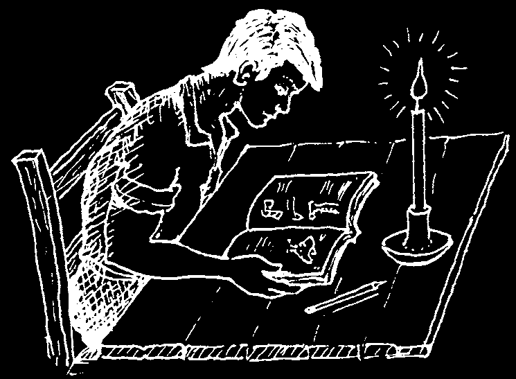
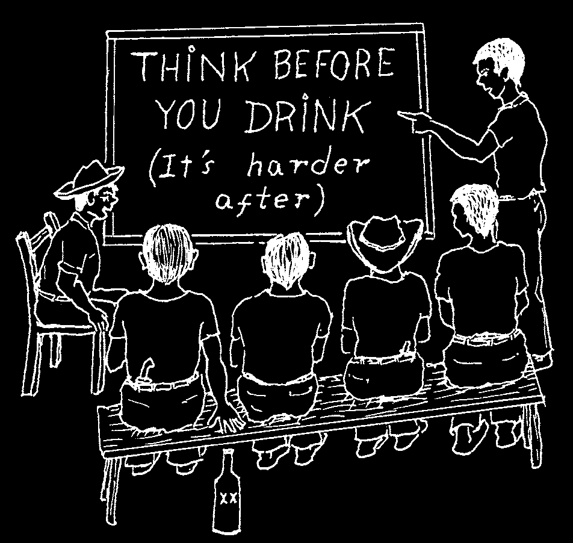
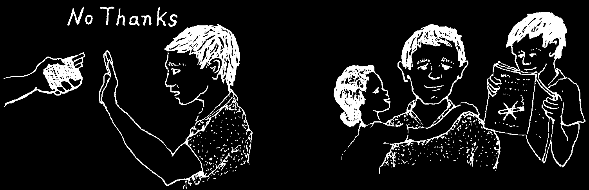
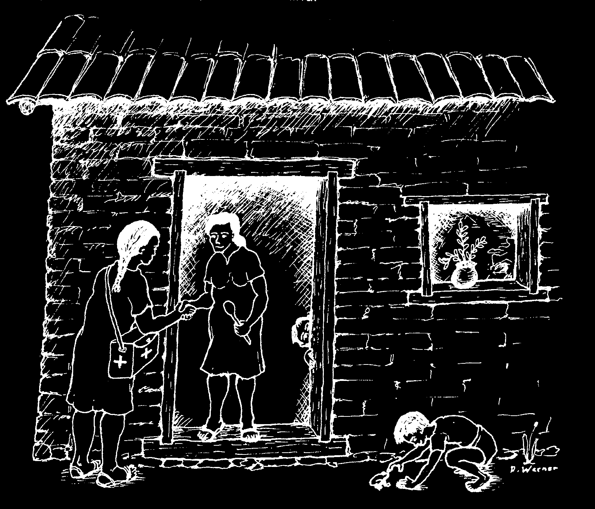
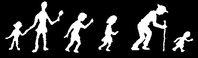
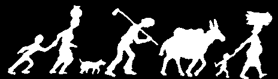

Words to the Village Health Worker
Who is the village health worker?
A village health worker is a person who helps lead family and neighbors toward better health. Often he or she has been selected by the other villagers as someone who is especially able and kind.
Some village health workers receive training and help from an organized program, perhaps the Ministry of Health. Others have no official position, but are simply members of the community whom people respect as healers or leaders in matters of health. Often they learn by watching, helping, and studying on their own.
In the larger sense, a village health worker is anyone who takes part in making his or her village a healthier place to live.
This means almost everyone can and should be a health worker:
• Mothers and fathers can show their children how to keep clean;
• Farm people can work together to help their land produce more food;
• Teachers can teach schoolchildren how to prevent and treat many common sicknesses and injuries;
• Schoolchildren can share what they learn with their parents;
• Shopkeepers can find out about the correct use of medicines they sell and give sensible advice and warning to buyers (see p. 338);
• Midwives can counsel parents about the importance of eating well during pregnancy, breastfeeding, and family planning.
This book was written for the health worker in the larger sense.
It is for anyone who wants to know and do more for his own, his family’s or his people’s well-being.
If you are a community health worker, an auxiliary nurse, or even a doctor, remember: this book is not just for you. It is for all the people. Share it!
Use this book to help explain what you know to others.
THE VILLAGE HEALTH WORKER LIVES AND
Perhaps you can get small groups
WORKS AT THE LEVEL OF HIS PEOPLE. HIS
together to read a chapter at a time
FIRST JOB IS TO SHARE HIS KNOWLEDGE.
and discuss it.
w1


Dear Village Health Worker,
This book is mostly about people’s health needs. But to help your village be a healthy place to live, you must also be in touch with their human needs. Your understanding and concern for people are just as important as your knowledge of medicine and sanitation.
Here are some suggestions that may help you serve your people’s human needs as well as health needs:
1. BE KIND. A friendly word, a smile, a
hand on the shoulder, or some other sign of caring often means more than anything else you can do. Treat others as your equals. Even when you are hurried or worried, try to remember the feelings and needs of others. Often it helps to ask yourself, “What would I do if this were a member of my own family?”
Treat the sick as people. Be especially kind to those who are very sick
HAVE COMPASSION.
or dying. And be kind to their families.
Kindness often helps more than medicine.
Let them see that you care.
Never be afraid to show you care.
2. SHARE YOUR KNOWLEDGE. As a health worker, your first job is to teach. This
means helping people learn more about how to keep from getting sick. It also means helping people learn how to recognize and manage their illnesses—including the sensible use of home remedies and common medicines.
There is nothing you have learned that, if carefully explained, should be of danger to anyone. Some doctors talk about self-care as if it were dangerous, perhaps because they like people to depend on their costly services. But in truth, most common health problems could be handled earlier and better by people in their own homes.
LOOK FOR WAYS TO SHARE YOUR KNOWLEDGE.
w2

3. RESPECT YOUR PEOPLE’S TRADITIONS AND IDEAS.
Because you learn something about modern medicine does not mean you should no longer appreciate the customs and ways of healing of your people. Too often the human touch in the art of healing is lost when medical science moves in.
This is too bad, because...
If you can use what is best in modern medicine, together with what is best in traditional healing, the combination may be better than either one alone.
In this way, you will be adding to your people’s culture, not taking away.
Of course, if you see that some of the home cures or customs are harmful
(for example, putting excrement on the freshly cut cord of a newborn baby), you will want to do something to change this. But do so carefully, with respect for those who believe in such things. Never just tell people they are wrong. Try to help them understand WHY they should do something differently.
People are slow to change their attitudes and traditions, and with good reason.
They are true to what they feel is right. And this we must respect.
Modern medicine does not have all the answers either. It has helped solve some problems, yet has led to other, sometimes even bigger ones. People quickly come to depend too much on modern medicine and its experts, to overuse medicines, and to forget how to care for themselves and each other.
So go slow—and always keep a deep respect for your people, their traditions, and their human dignity. Help them build on the knowledge and skills they already have.
WORK WITH TRADITIONAL
HEALERS AND MIDWIVES—
NOT AGAINST THEM.
Learn from them and encourage them to learn from you.
w3


4. KNOW YOUR OWN LIMITS.
No matter how great or small your knowledge and skills, you can do a good job as long as you know and work within your limits. This means: Do what you know how to do. Do not try things you have not learned about or have not had enough experience doing, if they might harm or endanger someone.
But use your judgment.
Often, what you decide to do or not do will depend on how far you have to go to get more expert help.
For example, a mother has just given birth and is bleeding more than you think is normal. If you are only half an hour away from a medical center, it may be wise to take her there right away. But if the mother is bleeding very heavily
KNOW YOUR LIMITS.
and you are a long way from the health center, you may decide to massage her womb (see p. 265) or inject a medicine to control bleeding (see p. 266) even if you were not taught this.
Do not take unnecessary chances. But when the danger is clearly greater if you do nothing, do not be afraid to try something you feel reasonably sure will help.
Know your limits—but also use your head. Always do your best to protect the sick person rather than yourself.
5. KEEP LEARNING.
Use every chance you have to learn more.
Study whatever books or information you can lay your hands on that will help you be a better worker, teacher, or person.
Always be ready to ask questions of doctors, sanitation officers, agriculture experts, or anyone else you can learn from.
Never pass up the chance to take refresher courses or get additional training.
KEEP LEARNING—Do not let anyone tell you there are things
Your first job is to teach, and unless you you should not learn or know.
keep learning more, soon you will not have anything new to teach others.
w4


6. PRACTICE WHAT YOU TEACH.
People are more likely to pay attention to what you do than what you say. As a health worker, you want to take special care in your personal life and habits, so as to set a good example for your neighbors.
Before you ask people to make latrines, be sure your own family has one.
Also, if you help organize a work group—for example, to dig a common garbage hole—be sure you work and sweat as hard as everyone else.
Good leaders do not tell people what to do.
They set the example.
PRACTICE WHAT YOU TEACH.
(Or who will listen to you?)
7. WORK FOR THE JOY OF IT.
If you want other people to take part in improving their village and caring for their health, you must enjoy such activity yourself. If not, who will want to follow your example?
Try to make community work projects fun. For example, fencing off the public water hole to keep animals away from where people take water can be hard work.
But if the whole village helps do it as a 'work festival’—perhaps with refreshments and music—the job will be done quickly and can be fun.
Children will work hard and enjoy it, if they can turn work into play.
You may or may not be paid for your work. But never refuse to care, or care less, for someone who is poor or cannot pay.
This way you will win your people’s love and respect.
These are worth far more than money.
WORK FIRST FOR THE PEOPLE—NOT THE MONEY.
(People are worth more.)
w5

8. LOOK AHEAD—AND HELP OTHERS TO LOOK AHEAD.
A responsible health worker does not wait for people to get sick. She tries to stop sickness before it starts. She encourages people to take action now to protect their health and well-being in the future.
Many sicknesses can be prevented. Your job, then, is to help your people understand the causes of their health problems and do something about them.
Most health problems have many causes, one leading to another. To correct the problem in a lasting way, you must look for and deal with the underlying causes. You must get to the root of the problem.
For example, in many villages diarrhea is the most common cause of death in small children. The spread of diarrhea is caused in part by lack of cleanliness (poor sanitation and hygiene). You can do something to correct this by digging latrines and teaching basic guidelines of cleanliness (p. 133).
But the children who suffer and die most often from diarrhea are those who are poorly nourished. Their bodies do not have strength to fight the infections. So to prevent death from diarrhea we must also prevent poor nutrition.
And why do so many children suffer from poor nutrition?
• Is it because mothers do not realize what foods are most important (for example, breast milk)?
• Is it because the family does not have enough money or land to produce the food it needs?
• Is it because a few rich persons control most of the land and the wealth?
• Is it because the poor do not make the best use of land or money they have?
• Is it because parents have more children than they can provide for, and keep having more?
• Is it because fathers lose hope and spend the little money they have on drink?
• Is it because people do not look or plan ahead?
Because they do not realize that by working together and sharing they can change the conditions under which they live and die?
HELP OTHERS TO LOOK AHEAD.
w6

You may find that many, if not all, of these things lie behind infant deaths in your area. You will, no doubt, find other causes as well.
As a health worker it is your job to help people understand and do something about as many of these causes as you can.
But remember: to prevent frequent deaths from diarrhea will take far more than latrines, pure water, and 'special drink’ (oral rehydration). You may find that child spacing, better land use, and fairer distribution of wealth, land, and power are more important in the long run.
The causes that lie behind much sickness and human suffering are short-sightedness and greed.
If your interest is your people’s well-being, you must help them learn to share, to work together, and to look ahead.
MANY THINGS RELATE TO HEALTH CARE
We have looked at some of the causes that underlie diarrhea and poor nutrition. Likewise, you will find that
The chain of causes leading to death from diarrhea.
such things as food production, land distribution, education, and the way people treat or mistreat each other lie behind many different health problems.
If you are interested in the long-term welfare of your whole community, you must help your people look for answers to these larger questions.
Health is more than not being sick. It is well-being: in body, mind, and community. People live best in healthy surroundings, in a place where they can trust each other, work together to meet daily needs, share in times of difficulty and plenty, and help each other learn and grow and live, each as fully as he or she can.
Do your best to solve day-to-day problems. But remember that your greatest job is to help your community become a more healthy and more human place to live.
You as a health worker have a big responsibility.
Where should you begin?
w7


TAKE A GOOD LOOK AT YOUR COMMUNITY
Because you have grown up in your community and know your people well, you are already familiar with many of their health problems. You have an inside view. But in order to see the whole picture, you will need to look carefully at your community from many points of view.
As a village health worker, your concern is for the well-being of all the people—not just those you know well or who come to you. Go to your people. Visit their homes, fields, gathering places, and schools. Understand their joys and concerns. Examine with them their habits, the things in their daily lives that bring about good health, and those that may lead to sickness or injury.
Before you and your community attempt any project or activity, carefully think about what it will require and how likely it is to work. To do this, you must consider all the following:
1. Felt needs—what people feel are their biggest problems.
2. Real needs—steps people can take to correct these problems in a lasting way.
3. Willingness—or readiness of people to plan and take the needed steps.
4. Resources—the persons, skills, materials, and/or money needed to carry out the activities decided upon.
As a simple example of how each of these things can be important, let us suppose that a man who smokes a lot comes to you complaining of a cough that has steadily been getting worse.
1. His felt need is to get rid of his cough.
2. His real need (to correct the problem)
is to give up smoking.
4. One resource that may help him give up
3. To get rid of his cough will require his smoking is information about the harm it can do willingness to give up smoking. For this he him and his family (see p. 149). Another is the must understand how much it really matters.
support and encouragement of his family, his friends, and you.
w8

Finding Out the Needs
As a health worker, you will first want to find out your people’s most important health problems and their biggest concerns. To gather the information necessary to decide what the greatest needs and concerns really are, it may help to make up a list of questions.
On the next 2 pages are samples of the kinds of things you may want to ask.
But think of questions that are important in your area. Ask questions that not only help you get information, but that get others asking important questions themselves.
Do not make your list of questions too long or complicated—especially a list you take from house to house. remember, people are not numbers and do not like to be looked at as numbers. As you gather information, be sure your first interest is always in what individuals want and feel. It may be better not even to carry a list of questions. But in considering the needs of your community, you should keep certain basic questions in mind.
w9

